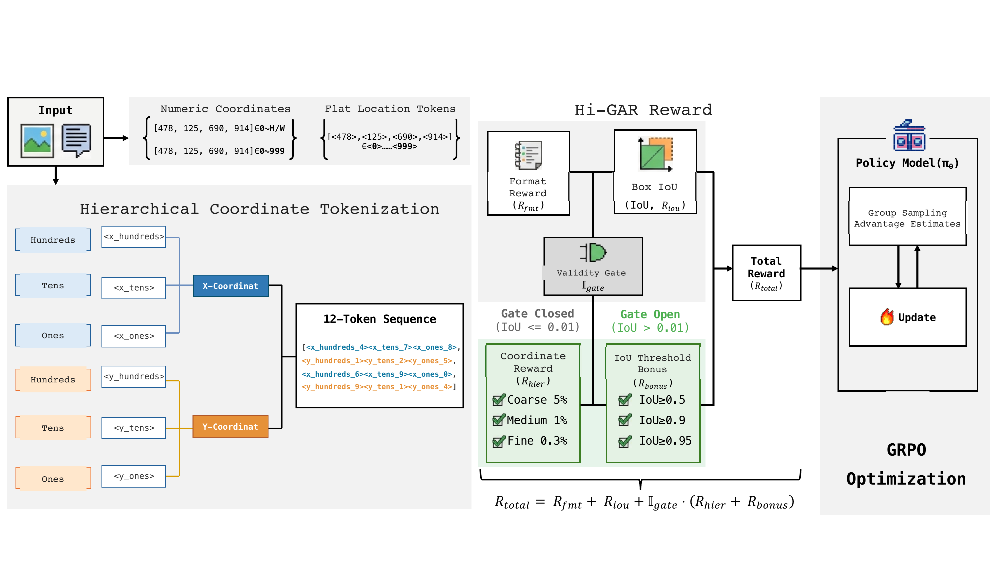
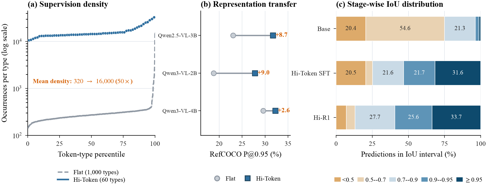
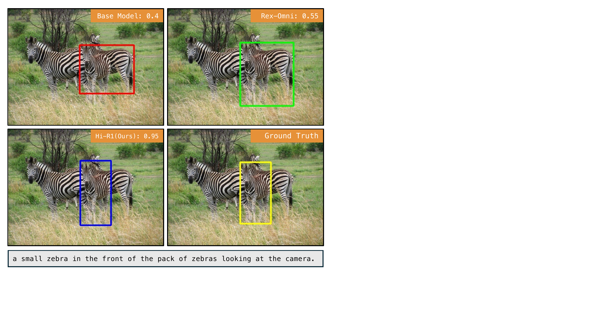
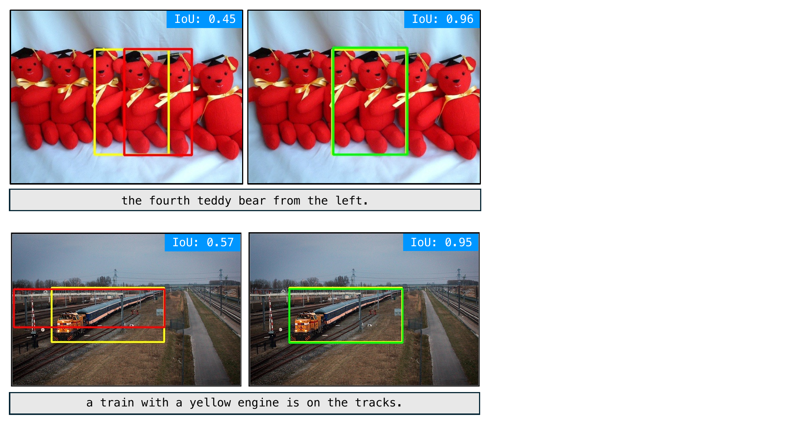
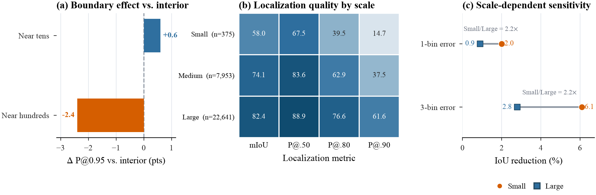

Flat tokenization
1,000 types
<323>
<324>
Adjacent values use independent atomic tokens, and the same vocabulary must implicitly learn both axes.
Structured coordinate generation for vision-language models, from axis-specific digit tokens to geometry-aware post-training.
1 University of Chinese Academy of Sciences
2 State Key Laboratory of Communication Content Cognition
3 Peng Cheng Laboratory
4 National University of Singapore
<478>
<x_hundreds_4>
<x_tens_7>
<x_ones_8>
Generative Vision-Language Models commonly treat bounding-box coordinates as independent output symbols, leaving numerical order and axis semantics implicit. Hi-Token encodes each coordinate with axis-specific tokens for the hundreds, tens, and ones digits, adding coarse-to-fine structure and increasing token reuse without changing the VLM architecture. Hi-GAR complements this representation with geometry-aware GRPO rewards based on box overlap and coordinate accuracy at multiple scales. Controlled comparisons show that Hi-Token improves localization throughout the evaluated IoU range, while Hi-GAR further reduces low-overlap predictions. Experiments on three VLM backbones and the RefCOCO family demonstrate consistent gains across models and benchmarks.
Flat location tokens make nearby values unrelated symbols. Hi-Token exposes numerical scale and axis roles through a compact, exactly parseable output vocabulary.
<323>
<324>
Adjacent values use independent atomic tokens, and the same vocabulary must implicitly learn both axes.
x_hundreds_3
x_tens_2
x_ones_3
x_hundreds_3
x_tens_2
x_ones_4
Neighboring coordinates reuse coarse tokens while preserving the fine change in the ones digit.
Hi-Token changes the coordinate representation. Hi-GAR supplies geometry-aware feedback during post-training and adds no inference-time module.
Factorize each coordinate into axis-specific hundreds, tens, and ones tokens.
Combine box IoU with coordinate checks at coarse, medium, and fine tolerances.
Apply coordinate-level rewards only after the prediction has meaningful overlap.

Under matched settings, Hi-Token improves target identification and boundary alignment. Hi-R1 remains compact, using a 3B backbone and 80k grounding samples.

| Method | RefCOCO | RefCOCO+ | RefCOCOg | ||||||
|---|---|---|---|---|---|---|---|---|---|
| mIoU | P@.5 | P@.95 | mIoU | P@.5 | P@.95 | mIoU | P@.5 | P@.95 | |
| VLM-R1 | 63.1 | 69.8 | 14.4 | 64.4 | 71.5 | 13.6 | 66.7 | 73.4 | 13.7 |
| Rex-Omni | 81.9 | 88.2 | 31.1 | 77.5 | 83.4 | 33.3 | 77.3 | 86.1 | 36.3 |
| Hi-R1 | 84.3 | 93.1 | 33.4 | 81.8 | 89.9 | 32.9 | 80.3 | 86.4 | 39.4 |
All values are percentages. The highlighted row is our final Hi-R1 model.
Hierarchical coordinate generation produces tighter boxes in crowded scenes, while Hi-GAR refines boundaries after supervised fine-tuning.


The analysis separates representation effects, reward-stage refinement, digit-boundary behavior, and scale-dependent coordinate sensitivity.

If you find Hi-Token useful, please cite our paper.
@article{zhu2026hitoken,
title = {Hi-Token: Hierarchical Coordinate Tokenization for Generative Visual Grounding},
author = {Zhu, Xiuyuan and Lu, Ke and Dong, Kun and Jiao, Siwen and Wu, Hao and Du, Zijin and Mao, Shun and Zhang, Dongming and Xue, Jian},
journal = {arXiv preprint arXiv:2608.03471},
year = {2026}
}For questions about the paper, code, or model, please contact us by email.